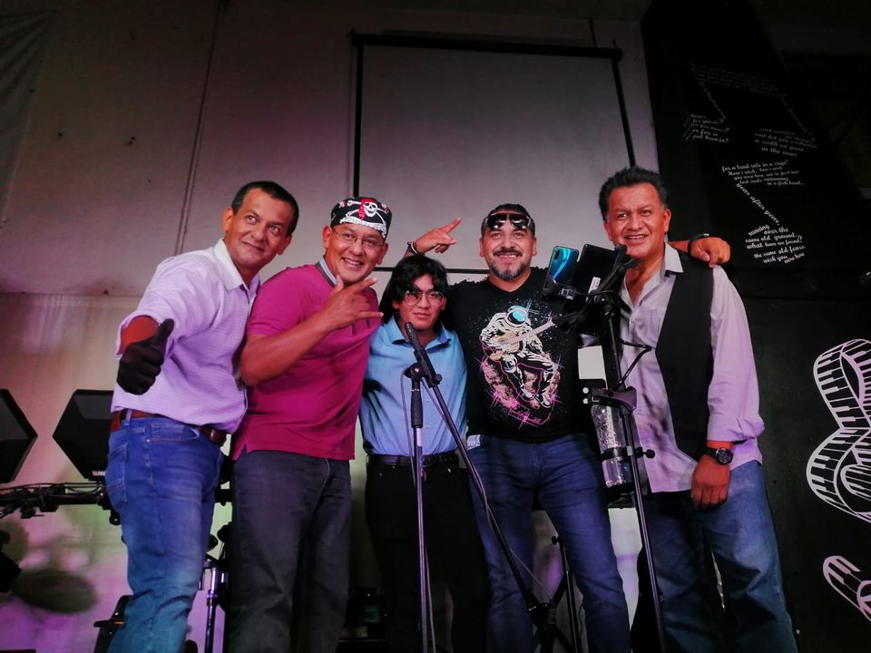

¿Quiénes Somos?
Banda mexicana de rock en español fundada a finales de 2017 por Arturo Torres, Daniel Montero y Jorge Torres con la idea de un pasatiempo ya que el común denominador es el gusto por el Rock en español. La estructura básica era bajo (Daniel), batería (Arturo) guitarra (Jorge) y voces, tocando para amigos y algunos lugares bajo contrato. Posteriormente se integra Omar Romero en el bajo para dejar a Daniel en la primera voz y guitarra de acompañamiento dando mejor estructura musical, tocando en varios lugares de su localidad.
En un evento se invito a Lluvia Berlín Molina a cantar y después de pláticas permaneció lo cual le dio más variedad al repertorio del grupo, poco tiempo después se integra el Prof. Héctor García en el teclado redondeando la estructura musical.
Por algunas diferencias de opinión el grupo descanso en diciembre de 2018 y se reintegro en mayo de 2019 saliendo Héctor, Omar y Lluvia los tres dedicándose a proyectos personales. Se integra a la banda Manuel Izquierdo en guitarra y voces y en el bajo José Carlos, de hecho este último colaboro en varias ocasiones con la banda en las ausencias de Omar. Por los tiempos de pandemia se retira José Carlos y en su lugar entra Fabián Torres, hermano de Arturo y Jorge y Manuel Izquierdo deja la banda por proyectos personales. Se integra en los teclados Luis Ángel Pozos quedan así la ultima alineación del grupo.
Conoce a los integrantes >>